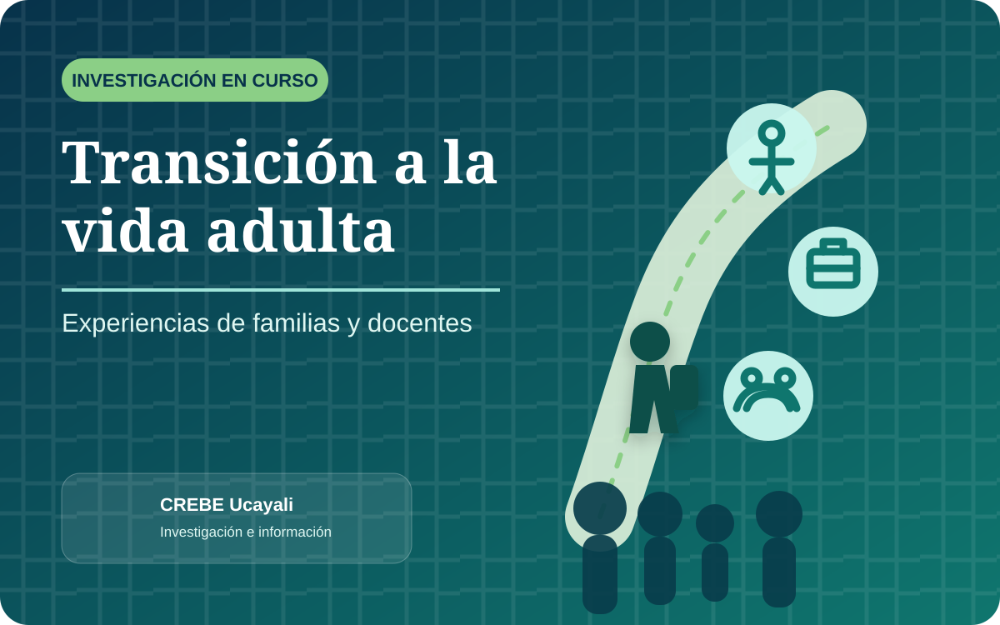

El CREBE "Señor de los Milagros" - Ucayali viene desarrollando una investigación cualitativa orientada a comprender cómo las familias y los docentes experimentan la transición a la vida adulta de estudiantes próximos a egresar de Educación Básica Especial.

Propósito del estudio
La investigación busca comprender las percepciones, expectativas, preocupaciones y necesidades de apoyo que surgen cuando los estudiantes se aproximan al término de su etapa escolar.
El interés se centra en interpretar esta experiencia desde la voz de quienes acompañan directamente el proceso: las familias y los docentes.
Aspectos que se abordarán
El estudio examinará el significado que los participantes atribuyen al egreso, las expectativas sobre la autonomía y la participación futura, las barreras que pueden limitar la continuidad de los apoyos y las estrategias consideradas necesarias para favorecer una transición más organizada.
Cómo se desarrollará
Se aplicarán entrevistas semiestructuradas a familias y docentes vinculados con estudiantes por egresar. La información será analizada de manera temática, respetando la participación voluntaria, la confidencialidad y el anonimato.
Aporte esperado
Los hallazgos permitirán contar con información contextualizada para orientar acciones de acompañamiento, asistencia técnica y fortalecimiento de capacidades relacionadas con la preparación para la vida adulta en Educación Básica Especial.
La transición a la vida adulta requiere planificación, continuidad de apoyos y participación activa de la familia, la escuela y la comunidad.
La investigación se encuentra en proceso. Los resultados serán comunicados cuando concluya la etapa de recolección, análisis e interpretación de la información.